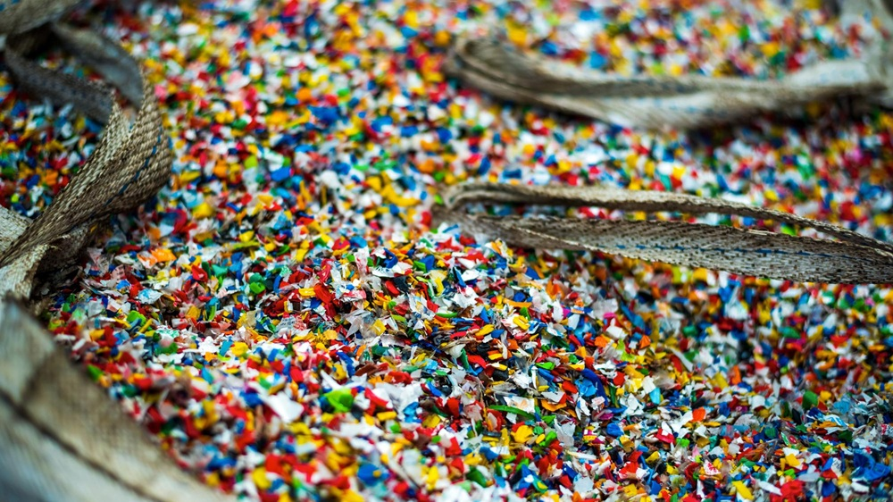

.
¿Qué son los microplásticos y cómo contaminan el agua?

Microplásticos en el Agua
Los microplásticos son pequeñas partículas de plástico con un tamaño menor a 5 milímetros, que representan una creciente preocupación ambiental, especialmente en los ecosistemas acuáticos. Estas partículas provienen de una variedad de fuentes, incluyendo la degradación de productos plásticos más grandes y microesferas usadas en productos de cuidado personal.
Su presencia en el agua se ha convertido en un problema global, afectando la vida marina y potencialmente la salud humana.
1. Fuentes y Tipos de Microplásticos
- Primarios: Microplásticos diseñados para ciertos productos como cosméticos o productos de limpieza.
- Secundarios: Resultan de la descomposición de productos plásticos más grandes, como botellas y bolsas.
- Fibras Sintéticas: Provienen de la ropa, especialmente durante el lavado.
2. Impacto en el Agua
- Ecosistemas Marinos: Los microplásticos se acumulan en océanos, ríos y lagos, afectando la vida acuática.
- Cadena Alimentaria: Pequeños organismos ingieren estos plásticos, pasándolos a lo largo de la cadena alimentaria, llegando potencialmente a los humanos.
- Toxinas: Algunos microplásticos contienen o absorben sustancias tóxicas que pueden ser dañinas para la vida acuática y humana.
3. Estrategias de Mitigación
- Reducción de Uso de Plásticos: Iniciativas para reducir la producción y uso de plásticos.
- Reciclaje y Gestión de Residuos: Mejorar el reciclaje y la disposición adecuada de productos plásticos.
- Investigación y Monitoreo: Continuar la investigación sobre la extensión y el impacto de la contaminación por microplásticos.
Fuentes de Información
- • Impacto de los Microplásticos en los Océanos - National Geographic
- • Microplásticos: Fuentes, Efectos y Soluciones - UNESCO
- • Microplásticos en el Agua: Un Desafío Global - WWF